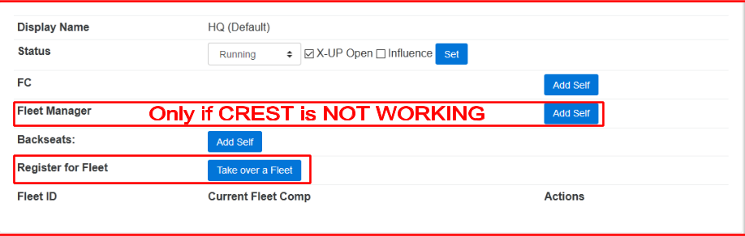
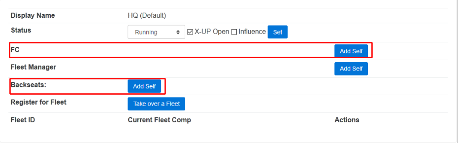
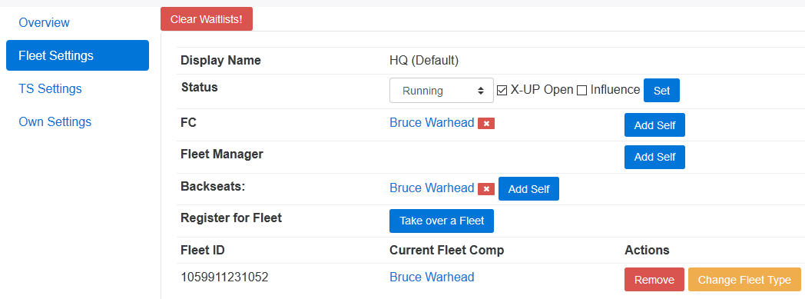
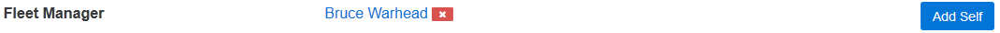
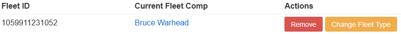
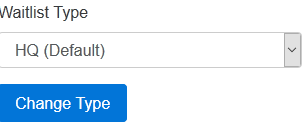
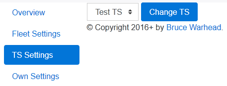

Eve Incursion Waitlist Manual
Bruce Warhead and Beryl Slanjava
September 6, 2017
For Eve Incursion Waitlist: 0.16.2
Contents
1 FC-/Backseat-Guide
1.1 Starting or Takingover Fleet
1.1.1 As Fleetmanager

- If the eve api is not working, set yourself manually as fleet manager via
- Start fleet and copy your external fleet link into the Waitlist when
requested after pressing
- You will be taken to CCP’s SSO-Login page to confirm who you are and
to allow the Waitlist to interact with your fleet.
If you are taking over an existing fleet, it will set you as the new fleet manager and you
are done. If you are starting a new Fleet, the following additional steps are
needed
- After granting the Waitlist access we will request the external fleet link
again and confirm what fleet you are in HQ/AS or VGs. Depending on
this the Auto-Fleet-Setup builds your squads and sets the MOTD.
- Afterwards match your In-Game Squads to the Waitlist-Group lists. Ie.
Logi-list to Logi-Squad, DPS-list to DPS-Squad
1.1.2 As FC or Backseat

- If you are FC add your self in the FC-Row by pressing
- If you are Backseat to a T-Badge add your self in the Backseats-Row by
pressing there
- If characters are still listed that are not Backseating/Fleetcommanding
any more please use the to the right of their name to remove them
(They should have done that when leaving through)
1.2 Leaving Fleet
1.2.1 As Fleetmanager
If the eveapi is working and used you need to do Nothing, when the other Person
takes the fleet, it will automatically replace you as Fleetmanager. If the eveapi was
not working, and the manual way of setting a Fleetmanager was used, you
need to remove yourself from it by pressing the to the right of your
name.
1.2.2 As FC or Backseat
 When you are leaving fleet and you where the Fleetcommander or Backseat
remove yourself from the FC- or Backseats-Row using the to the right of your
name.

1.3 Checking Fits on X-UP
- Shows/Hides the fittings
- below the portrait accepts all fits from this character
- Sends a Notification (make the gong go off) and poke (with the
message that the FC wants something from them) on TeamSpeak if they
are on there and their Charactername matches exactly (case sensitive and
no additions)
- Remove a entry from X-UP, this does not affect that characters entries
in the Waitlists!
- NEXT to a FIT, allows to approve this single fit, without approving
an of the other fits. To deny specific fits, you accept all fits that you want
to accept using next to the fit and then use to remove the X-UP
Entry.
- Click anywhere on a fit except the to open a Fittingwindow (Figure
2).
1.4 Inviting
- The Buttons behaves exactly the same as in a X-UP Entry1.
- removes them from the 3 type lists (dps/sniper/logi) but NOT from
the x-up list.
- Sends the Notification (Gong) and a TeamSpeak poke if their
Charactername matches exactly (case sensitive and no additions). The
message contains the Waitlistname they were gonged from. This is mostly
there in case CCP fucks up the api or you need a person for something
else then inviting!
- sends an invite to the person using eveapi. The character is
invited to the specific squad. This triggers the Notification and TS-Poke,
in the TS-Poke it is written which waitlist they were invited from
(dps/sniper/logi).
TS-Pokes can be disabled on the X-UP Form, they are enabled by default. Inviting some
one sets off a timer that check for the invite beeing accepted and then removes a
found character from the Waitlist.
1.5 Fleet Shutdown
- If you are the last fleet of for this list, set Status to ”Down” and un-tick
the X-UP Open box, then click .
- Remove yourself from the FC/Fleet Manager field by pressing to the
right of your name.
- Remove your Fleet from the Fleetlist by pressing .
1.6 Changing Fleet’s assigned Waitlist

Make sure the Fleet-Type you want to change to, has a X-UPs open and press
next to your Fleet. You will get a Screen like this where you can
select the Fleet-Type you want to change to, if a Waitlist is not Open, it’s
type will not be listed here! Press and your fleet should now be listed
under the other Waitlistsettings. FCs needs to manually remove them selves
from the old Waitlistgroup-Settings and add himself to the ones of the new
Type.
1.7 TeamSpeak Settings
These Settings are used for the TS-Poke.
Should only be changed if the TS-Server is changing (e.g. going to a backup
TS)

Select a TS-Server from the Dropdown and press to make the TS-Bot change
server
1.8 Setting your Waitlist Character
Under Default Character fill in the character name you want to use, then press
 .
.